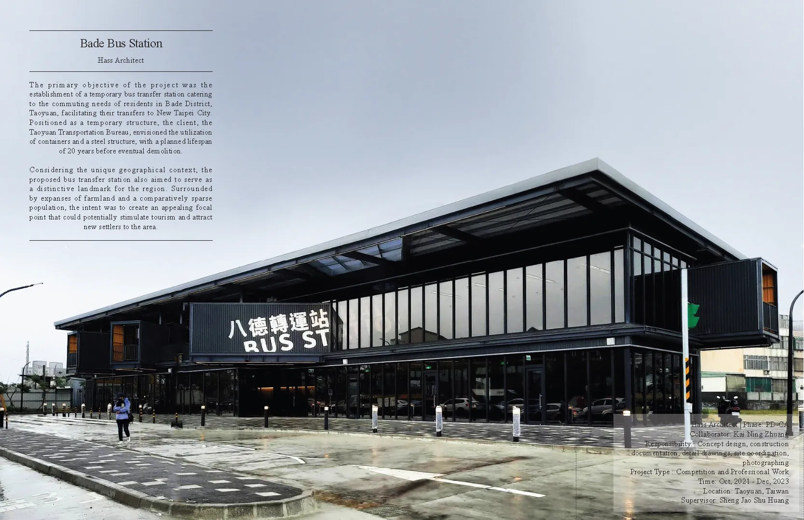
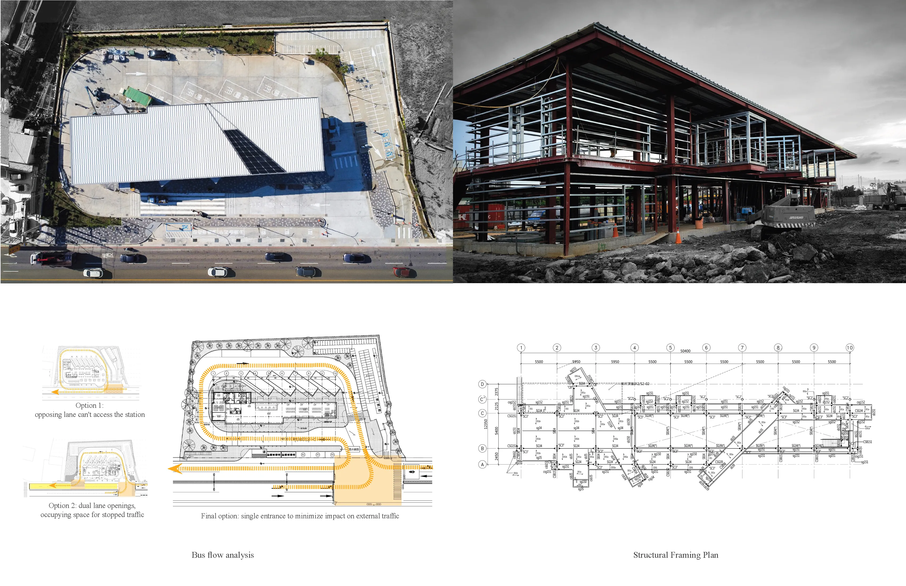
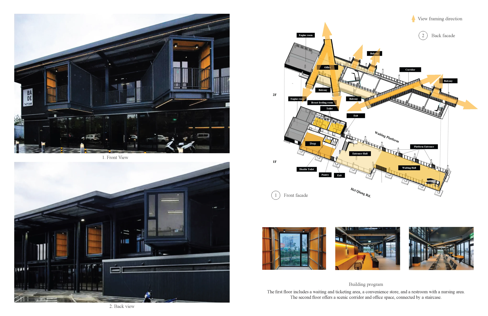
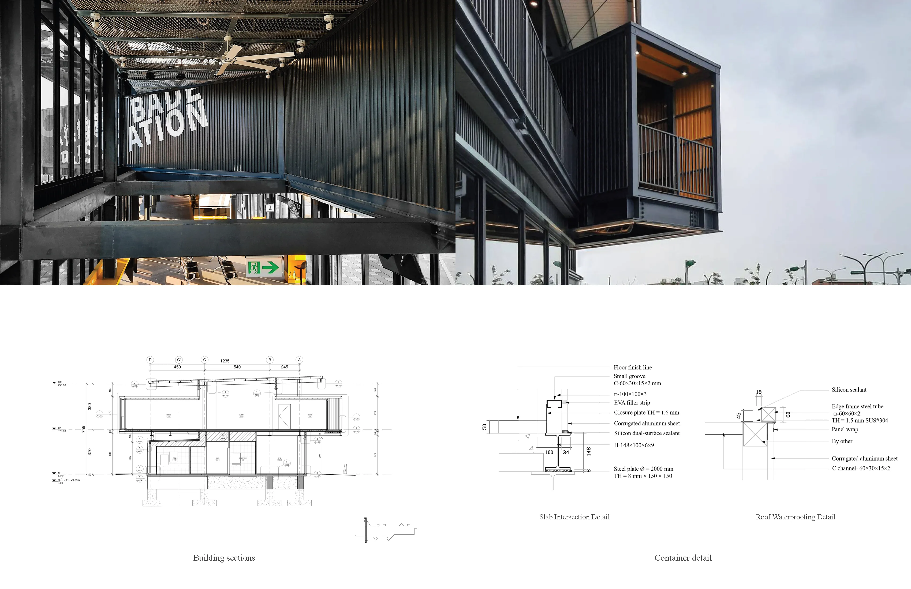

Bade Bus Station

Project Overview
The primary objective of the project was the establishment of a temporary bus transfer station catering to the commuting needs of residents in Bade District, Taoyuan, facilitating their transfers to New Taipei City. Positioned as a temporary structure, the client, the Taoyuan Transportation Bureau, envisioned the utilization of containers and a steel structure, with a planned lifespan of 20 years before eventual demolition. Considering the unique geographical context, the proposed bus transfer station also aimed to serve as a distinctive landmark for the region. Surrounded by expanses of farmland and a comparatively sparse population, the intent was to create an appealing focal point that could potentially stimulate tourism and attract new settlers to the area.
Technical Data
- Status: PD-CA
- Collaborator:Kai Ning Zhung
- Tools: Revit, Rhino, AutoCAD
- Typology:Transportation


